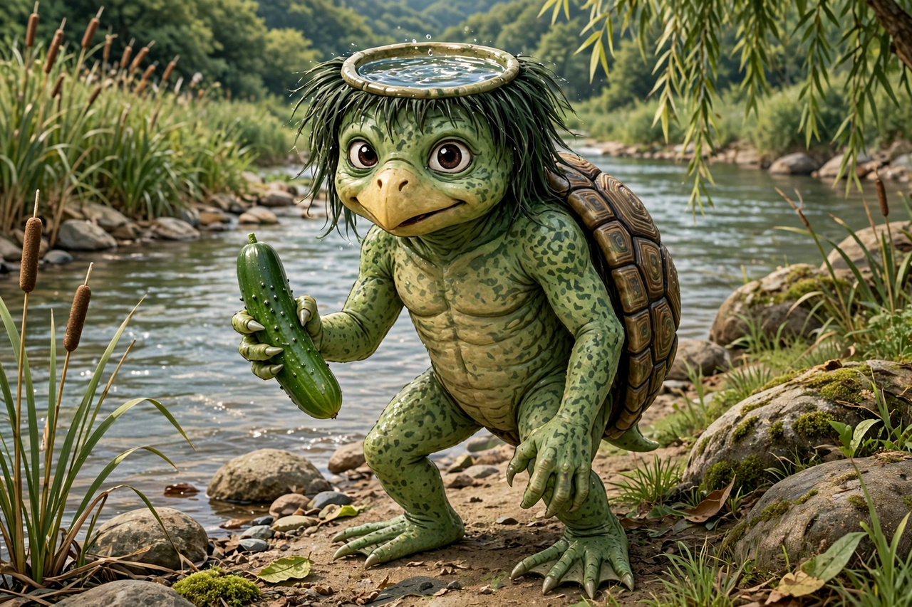

| Kappa | |
|---|---|
| Japanese | 河童 ("river child") |
| Grouping | Yōkai; also venerated as a water deity (suijin) |
| Habitat | Rivers, ponds, lakes |
| Features | Water-filled dish (sara) on the head, webbed hands, turtle-like shell, beak |
| Weaknesses | Loses power if the water in its dish spills; loves cucumbers and sumo; compelled to return politeness |

A kappa (河童, "river child") is an amphibious yōkai of Japanese folklore, dwelling in rivers and ponds. Kappa are roughly the size of a child, with scaly green skin, webbed hands and feet, a turtle-like shell on the back and a beak-like mouth. Their most distinctive feature is the sara, a shallow, hair-fringed dish on top of the head that holds water: a kappa whose dish runs dry loses its strength and may die.
Kappa have a dual nature. In older and darker tales they are genuinely dangerous: they drag horses and children into the water and drown them, and are said to seek the mythical shirikodama, a ball located within the anus of their victims. Signage warning of kappa still appears beside real rivers as a traditional way of teaching children water safety.
Yet kappa are also famously bound by etiquette. A kappa encountered on land can be defeated simply by bowing deeply: it will bow in return, spill the water from its dish, and be unable to move until the dish is refilled — an act of mercy it is then obliged to repay. Kappa are credited with teaching humans bone-setting and irrigation, and in some regions they are enshrined as water deities (suijin) who must be propitiated at festivals.
The kappa's favourite food is the cucumber — the sushi roll kappamaki is named for it — and families traditionally floated cucumbers inscribed with their names on rivers to placate the creatures. Tales also feature kappa challenging humans to sumo wrestling, repaying kindness for generations, and entering into written contracts not to drown people in a particular stretch of river.